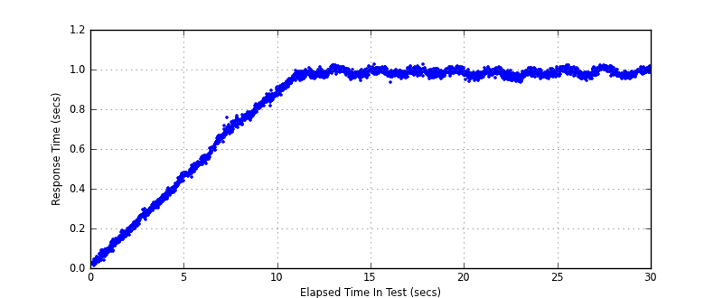
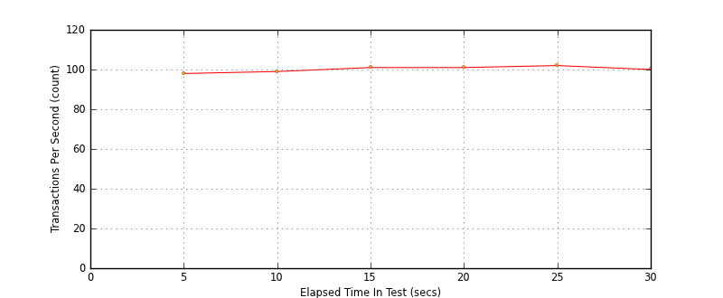
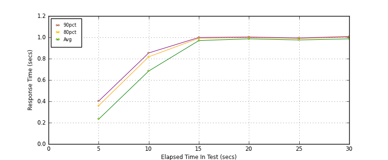

Performance Results Report
Summary
transactions: 3123
errors: 0
run time: 30 secs
rampup: 10 secs
test start: 2014-01-28 16:22:19
test finish: 2014-01-28 16:22:49
time-series interval: 5 secs
workload configuration:
| group name | threads | script name |
|---|
| user_group-1 | 100 | read_user.py |
All Transactions
Transaction Response Summary (secs)
| count | min | avg | 80pct | 90pct | 95pct | max | stdev |
|---|
| 3123 | 0.009 | 0.809 | 0.990 | 0.998 | 1.004 | 1.026 | 0.286 |
Interval Details (secs)
| interval | count | rate | min | avg | 80pct | 90pct | 95pct | max | stdev |
|---|
| 1 | 494 | 98.80 | 0.009 | 0.232 | 0.359 | 0.402 | 0.438 | 0.478 | 0.128 |
| 2 | 497 | 99.40 | 0.459 | 0.685 | 0.818 | 0.854 | 0.869 | 0.906 | 0.129 |
| 3 | 508 | 101.60 | 0.870 | 0.970 | 0.991 | 0.999 | 1.008 | 1.022 | 0.029 |
| 4 | 509 | 101.80 | 0.934 | 0.986 | 0.997 | 1.003 | 1.007 | 1.026 | 0.013 |
| 5 | 513 | 102.60 | 0.933 | 0.975 | 0.989 | 0.995 | 0.999 | 1.013 | 0.015 |
| 6 | 502 | 100.40 | 0.945 | 0.986 | 1.001 | 1.008 | 1.011 | 1.022 | 0.016 |
Graphs
Response Time: 5 sec time-series
Response Time: raw data (all points)

Throughput: 5 sec time-series

Custom Timer: get_tweets
Timer Summary (secs)
| count | min | avg | 80pct | 90pct | 95pct | max | stdev |
|---|
| 3023 | 0.009 | 0.809 | 0.990 | 0.998 | 1.004 | 1.025 | 0.286 |
Interval Details (secs)
| interval | count | rate | min | avg | 80pct | 90pct | 95pct | max | stdev |
|---|
| 1 | 494 | 98.80 | 0.009 | 0.232 | 0.359 | 0.402 | 0.438 | 0.478 | 0.128 |
| 2 | 497 | 99.40 | 0.459 | 0.684 | 0.818 | 0.854 | 0.869 | 0.905 | 0.129 |
| 3 | 508 | 101.60 | 0.870 | 0.970 | 0.991 | 0.999 | 1.007 | 1.022 | 0.029 |
| 4 | 509 | 101.80 | 0.934 | 0.986 | 0.997 | 1.003 | 1.007 | 1.025 | 0.013 |
| 5 | 513 | 102.60 | 0.932 | 0.975 | 0.989 | 0.994 | 0.999 | 1.012 | 0.015 |
| 6 | 502 | 100.40 | 0.945 | 0.986 | 1.001 | 1.007 | 1.011 | 1.022 | 0.016 |
Graphs
Response Time: 5 sec time-series

Response Time: raw data (all points)
Throughput: 5 sec time-series